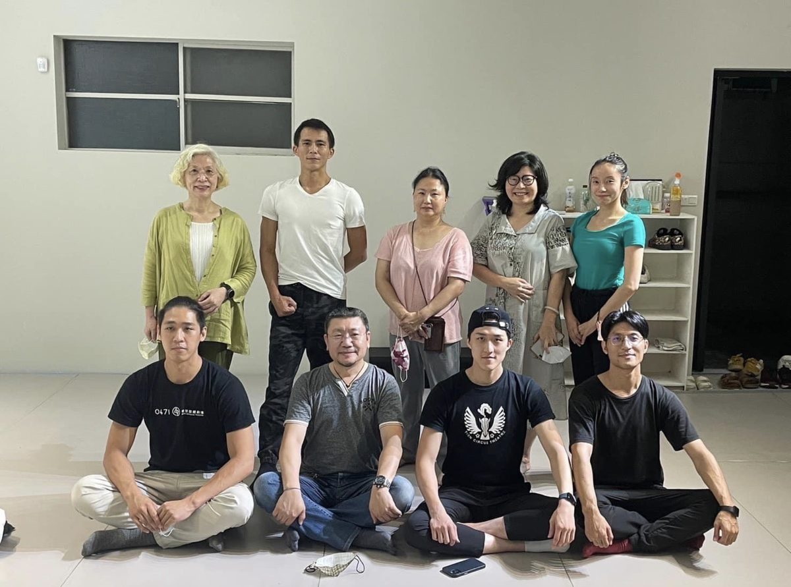

理監事聯席會議紀錄Minutes of the Joint Meeting
臺灣特技舞蹈協會第 1 屆第 1 次理監事聯席會議1st joint meeting of the Board of Directors and Supervisors, Taiwan Acrobatic Dance Association
- 時間 111 年 9 月 4 日 15:30
- Time September 4, 2022, 15:30
- 地點 臺北市大安區建國南路一段 177 號（神色舞形舞團 神的共享吧）
- Venue No. 177, Sec. 1, Jianguo S. Rd., Da'an Dist., Taipei
- 主席 林佳鋒 紀錄 吳瑛芳
- Chair Lin Jia-Feng Minutes Wu Ying-Fang
- 出席理事 應出席 9 人，實際出席 6 人（請假 3 人、缺席 0 人）
- Directors present 9 expected; 6 attended (3 on leave, 0 absent)
- 出席監事 應出席 3 人，實際出席 3 人（請假 0 人、缺席 0 人）
- Supervisors present 3 expected; 3 attended (0 on leave, 0 absent)
- 列席人員 臺北市中國文化大學校友會 陳碧涵 理事長
- Observers Chen Bi-Han, President of the Taipei Chinese Culture University Alumni Association
討論提案Proposals Discussed
- 提案一 執行長人事任命案說明：本會置執行長一人承理事長之命處理本會事務。
決議：本會經理監事會決議，聘任吳瑛芳為執行長，承理事長之命處理本會事務。 - Proposal 1 — Appointment of the Executive DirectorThe association has one Executive Director, who manages its affairs under the direction of the President.
Resolution: the boards resolved to appoint Wu Ying-Fang as Executive Director. - 提案二 年度工作計畫案執行推動相關事宜說明：111 年度工作計畫、112 年度工作計畫案，推動發展相關事宜。
決議：照案通過。 - Proposal 2 — Implementation of the annual work plansMatters concerning the implementation of the 2022 and 2023 work plans.
Resolution: adopted as proposed. - 提案三 本會成立特色小組簡則草案說明：依組織章程第二十六條，本會得設置各種委員會、小組或其他內部作業組織，其組織簡則由理事會擬定，載明設立依據、組成、任務、經費來源等，提經理事會通過，修正時亦同。
決議：修正第三條，修正後通過。 - Proposal 3 — Draft guidelines for establishing special working groupsUnder Article 26 of the charter, the association may establish committees, working groups and other internal bodies; their guidelines — covering legal basis, composition, tasks and funding — are drafted and approved by the Board of Directors, as are any amendments.
Resolution: Article 3 amended; adopted as amended. - 提案四 有關決議會址所在地確認案說明：經第一次籌備會議討論，以臺北市內湖區康寧路一段 116 號 3 樓之 2 作為辦公及通訊聯絡使用處所。
決議：照案通過。 - Proposal 4 — Confirmation of the registered officeAs discussed at the first preparatory meeting, 3F-2, No. 116, Sec. 1, Kangning Rd., Neihu Dist., Taipei was designated as the office and correspondence address.
Resolution: adopted as proposed.
選舉事宜Elections
第 1 屆第 1 次常務理事、理事長、副理事長、常務監事選舉：常務理事、理事長、副理事長、常務監事之選舉結果，詳如理監事及工作人員簡歷冊。理事長致詞及移交，依《督導各級人民團體實施辦法》相關規定辦理。Elections were held for the standing directors, President, Vice President and standing supervisor; the results are recorded in the register of board members and staff. The President's address and the handover were conducted in accordance with the Regulations for the Supervision of Civil Organizations.
臨時動議Other Motions
本會經理監事會決議，聘任陳碧涵為本會榮譽顧問。The boards resolved to appoint Chen Bi-Han as Honorary Advisor of the association.
散會Adjournment
18:00 散會。The meeting adjourned at 18:00.